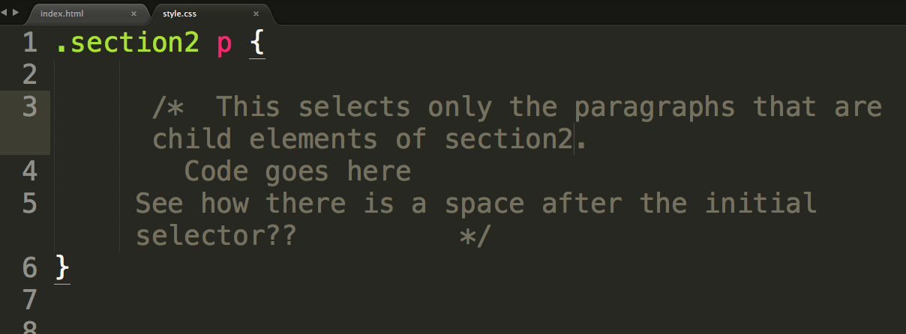

However, most of the time you want to style only specific tags that you've coded in HTML. Selecting them all in your CSS is no necessarily going to be the best thing for you to do all the time.
As an example, maybe you want some paragraphs (like this one) to be the color purple. If you simply code a p as your selector in CSS, it will select every paragraph in your webpage.
Fortunately, CSS has the power to select specific elemtents without giving all of them specific id's or classes. For example, the paragraph has been created as a child element of the div with the class "section2". Therefore, I could select any child element of "section2" like this:
In order to find out more, and see a screen cast on this items, you should head here: text. You will need to download the files/folders onto your computer and work with them there